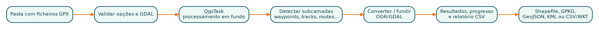

7 Parte V - Estudos de caso
7.1 25. GPX Batch Converter
Repositório: https://github.com/Jubilio/gpx-batch-converter
Plugin oficial: https://plugins.qgis.org/plugins/gpx_batch_converter/

7.1.1 25.1 Problema original
Converter centenas de ficheiros GPX manualmente, camada por camada, cria atrasos, nomes inconsistentes e perda de rastreabilidade. A primeira versão automatizou a conversão de waypoints, routes, route_points, tracks e track_points.
7.1.2 25.2 Arquitectura
gpx_batch_converter/
├── __init__.py -> classFactory()
├── plugin.py -> menu, toolbar e ciclo de vida
├── dialog.py -> interface, validação e apresentação
├── conversion_task.py -> QgsTask, GDAL, cancelamento e resultados
├── metadata.txt
├── icon.png
├── LICENSE
└── README.mdEsta separação permite testar funções de conversão sem instanciar toda a interface.
7.1.3 25.3 Evolução funcional
7.1.3.1 Fase 1 - lote básico
- pastas de entrada e saída;
- subcamadas seleccionáveis;
- overwrite;
- adicionar resultados ao projecto;
- progresso e resumo.
7.1.3.2 Fase 2 - fusão e proveniência
- um output por tipo de camada;
- prefixo configurável;
- campos source_file, source_path e source_layer;
- camadas ausentes separadas de erros.
7.1.3.3 Fase 3 - produto profissional
- Shapefile, GeoPackage, GeoJSON, KML e CSV/WKT;
- painel de resultados;
- relatório CSV;
- QGIS Task Manager;
- cancelamento;
- interface responsiva.
7.1.3.4 Fase 4 - segurança e publicação
- caminhos absolutos de GDAL;
shell=False;- argumentos validados;
- remoção de SQL dinâmico;
- metadata completa;
- compatibilidade QGIS 3.28-4.99 e Qt 6;
- aprovação no repositório oficial.
7.1.4 25.4 Lições
- Diferencie ausência esperada de falha.
- Uma operação demorada precisa de tarefa, progresso e cancelamento.
- Dados fundidos precisam de proveniência.
- Processos externos exigem validação de segurança.
- Relatórios estruturados são mais úteis que uma caixa final.
7.2 26. GeoClick Capture
Repositório: https://github.com/Jubilio/qgis-latlon
Release usada no estudo: v1.2.6.
7.2.1 26.1 Problema e reposicionamento
A primeira ideia concentrava-se em coordenadas, uma área já coberta por plugins maduros. O projecto foi redefinido como uma ferramenta de log auditável para verificação de campo, revisão cartográfica e controlo de qualidade GIS.
Essa decisão ilustra um princípio importante: uma boa alteração de produto pode ser mais valiosa que adicionar funcionalidades.
7.2.2 26.2 Registo de auditoria
Cada captura pode armazenar:
session_id
captured_at
operator
category
status
note
lat / lon
map_x / map_y
project_crs
project_name
map_scale
source_layer
source_layer_id
source_feature_id
location
snapped
snap_type
snap_distance7.2.3 26.3 Evolução
7.2.3.1 Base
- clique no mapa;
- WGS 84;
- camada temporária;
- exportação.
7.2.3.2 Painel Capture Log
- sessão;
- operador, categoria, estado e nota;
QgsMapLayerComboBox;- tabela de registos;
- undo, delete e clear;
- CSV, GeoJSON e GeoPackage;
- preferências persistentes.
7.2.3.3 Precisão espacial
- snapping do projecto;
- fallback automático para vértices;
- fallback para segmentos;
- tolerância em pixels;
- campos de auditoria.
7.2.3.4 Rede
QgsNetworkAccessManager;- cache;
- um pedido por segundo;
- timeout;
- redireccionamentos seguros;
- diagnóstico HTTP/SSL/DNS/proxy;
- fallback de endereço para área administrativa;
- captura independente da rede.
7.2.3.5 Compatibilidade e qualidade
- enums Qt 6 scoped;
- fallbacks Qt 5;
- testes AST;
- ícones SVG específicos;
- GitHub Actions e release automatizada.
7.2.4 26.4 Lições
- O CRS do mapa não é necessariamente WGS 84.
- Interface persistente favorece
QDockWidget. - Snapping deve ser previsível e auditável.
- Serviço externo não deve comprometer a função principal.
- Validadores podem analisar ficheiros que não são executados directamente; mantenha todo o pacote compatível.
7.3 27. Comparação dos dois padrões
Os dois plugins partilham o mesmo ciclo de vida QGIS, metadata, disciplina de empacotamento e preocupação com Qt 6. A diferença está no centro da arquitectura: o GPX Batch Converter organiza uma operação de lote; o GeoClick Capture mantém uma sessão interactiva no mapa. A tabela seguinte resume as decisões principais.
Interacção principal
- GPX Batch Converter: ficheiros e operação de lote.
- GeoClick Capture: clique no mapa e sessão interactiva.
Interface
- GPX Batch Converter:
QDialog, adequado a uma tarefa com início e fim definidos. - GeoClick Capture:
QDockWidget, adequado a trabalho contínuo enquanto o mapa permanece visível.
Processamento e dependências
- GPX Batch Converter: usa
QgsTaskpara operações longas e integra ferramentas GDAL/OGR disponibilizadas pelo ambiente QGIS. - GeoClick Capture: executa sobretudo interacções curtas; a dependência externa principal é a geocodificação reversa opcional.
Geometria e estado
- GPX Batch Converter: lê, converte e combina geometrias, mantendo opções e resultados do lote.
- GeoClick Capture: cria pontos, transforma CRS, aplica snapping e mantém sessão, camada e preferências.
Saídas e risco central
- GPX Batch Converter: produz múltiplos formatos; os principais riscos são bloqueio da interface, subprocessos e tratamento incompleto de lotes.
- GeoClick Capture: produz uma camada auditável e exportações; os principais riscos são CRS, snapping, rede e compatibilidade Qt.
A arquitectura ideal depende do tipo de problema. Não copie uma estrutura inteira sem compreender as necessidades.